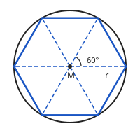
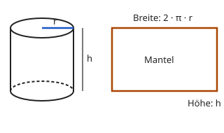
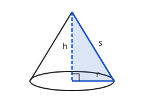
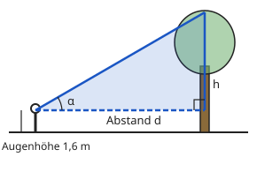
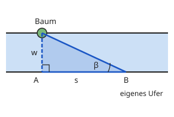

Medienübersicht
Alle Bilder, Audios und Videos dieser App mit ihrer Quelle und ihrer Lizenz.
Bilder

images/sechseck-dreiecke.svg© CC0-1.0Verwendet auf: Die Zahl π

images/zylinder-mantel.svg© CC0-1.0Verwendet auf: Der Zylinder

images/kegel-dreieck.svg© CC0-1.0Verwendet auf: Kegel und Pyramide

images/pyramide-dreieck.svg© CC0-1.0Verwendet auf: Kegel und Pyramide

images/kugel-archimedes.svg© CC0-1.0Verwendet auf: Die Kugel nach Archimedes

images/schulhof-baum.svg© CC0-1.0Verwendet auf: Messtag auf dem Schulhof

images/schulhof-fluss.svg© CC0-1.0Verwendet auf: Messtag auf dem Schulhof

images/vieleck-dreieck.svg© CC0-1.0Verwendet auf: Regelmäßige Vielecke